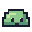

Поход за кристаллами
Победи трёх слизней и собери пять кристаллов.
Ход 1
Кристаллы 0 / 5
Зелья 2
Искатель
Здоровье: 100 / 100
Слизень 1 / 3

Здоровье: 40 / 40
Следующая атака слизня: 16 урона.
Как играть?
После твоего действия слизень атакует в ответ. Каждый третий его удар сильнее: 30 вместо 16. Следи за подсказкой над кнопками.
Щит тоже наносит урон, а ответный удар уменьшает до 3. Зелье восстанавливает 30 здоровья, но не защищает от атаки.
За победу над первым слизнем получишь один кристалл, за остальных — по два. Между боями восстанавливается 20 здоровья. Всего у тебя два зелья на весь поход.